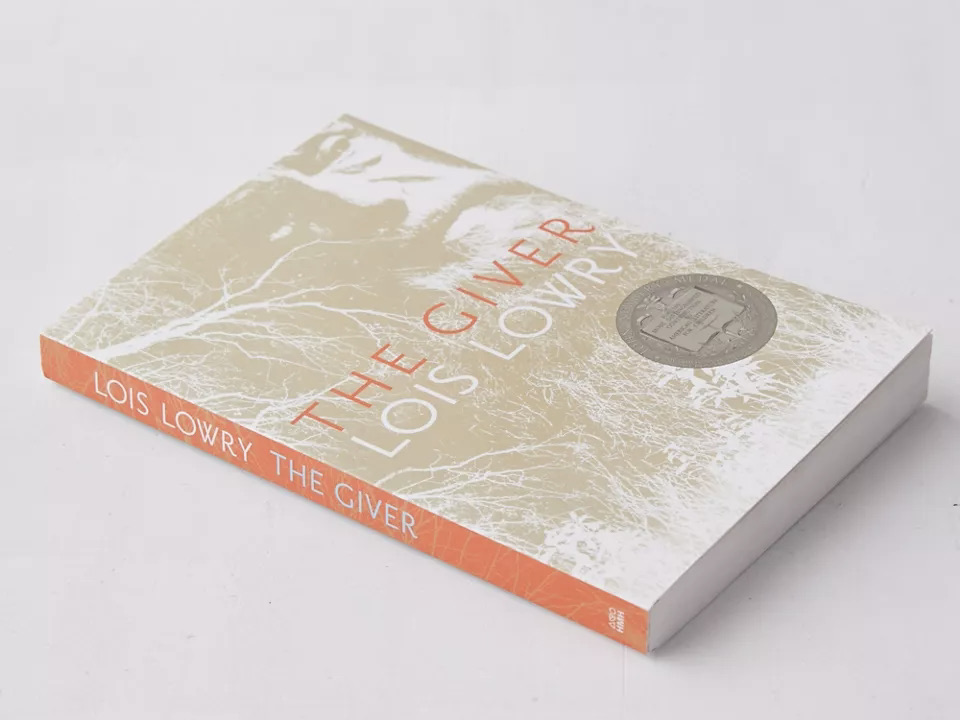

F. Scott Fitzgerald’s stories are emblematic of the Lost Generation, which came of age in the years following World War I. Along with The Great Gatsby, this luxurious leather-bound volume also includes his earlier works, This Side of Paradise and The Beautiful and Damned. Each novel presents the aura of the Jazz Age in a different context, painting a wide-ranging picture of the uncertainty and upheaval faced by Americans at the time. This classic collection also includes a scholarly introduction about Fitzgerald’s life and work, offering insights into his creative genius.
Take a look into the bizarre world of the feline with this book that answers the questions about your cat companions and offers off-beat scientific revelations about our favorite furry friends.
From the indie rock star of Japanese Breakfast, an unflinching, powerful memoir about growing up Korean American, losing her mother, and forging her own identity. A May 2021 Indie Next Pick.There’s a reason Finland, Denmark, Norway, Iceland and Sweden consistently rank as the top 5 happiest countries on earth. Find out the secrets to their happiness and fulfillment in The Scandinavian Guide to Happiness, which shares centuries of Nordic wisdom, including Denmark’s Lykke and Hygge, Sweden’s Lagom and Fika and the concept of Sisu, together encouraging a life of just the right amount, indulging in comforting daily rituals, incorporating coziness to your daily routines and bringing daily courage, grit and determination to moments of adversity. Full of inspiring, encouraging ideas and charming illustrations, this thoughtful Scandinavian guide is sure to put a happy glow on your life.

One of the most influential novels of our time, The Giver centers around a 12-year-old boy, Jonas, who lives in a seemingly ideal world until he’s given his life assignment as the Receiver of Memories.A book of colorful artwork depicting notable women throughout history—past & present.Book filled with planting advice from the acclaimed English garden at Great Dixter complete with 50 recipes.Following its release in August 1991, Metallica’s landmark self-titled album - better known by fans as the Black Album - debuted at number one in ten countries and spent four consecutive weeks at the top of the Billboard 200. Official photographer Ross Halfin was in the recording studio with the band and documented the tour that followed. Between 1991 and 1993, he shot thousands of film rolls of the hectic performing schedule and many unique portrait sessions, backstage documentary-style photography, rehearsals, interviews and band meetings. This official Metallica book features previously unpublished images, with introductions by Ross Halfin, James Hetfield, Lars Ulrich, Kirk Hammett, Jason Newsted and Robert Trujillo. Printed with a metallic silver jacket with block-foil lettering, it’s an epic celebration of one of rock’s greatest creations.